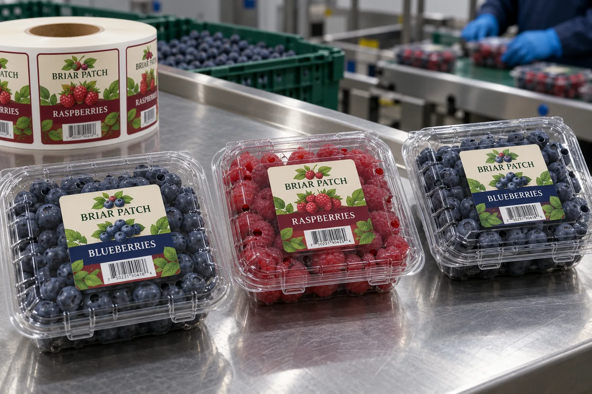

The clamshell is part of the artwork
A transparent lid makes the berries the strongest image on the pack. I would not cover that advantage with a label sized from a desktop mockup. On a filled clamshell, the lid can dome, vents can sit closer to the center than expected, and the hinge and latch occupy useful space. The first dieline should come from the actual closed pack.
Avery Dennison's clear direct-thermal film overview identifies fresh produce and clamshells as applications where product visibility matters. That supports considering a clear face, not assuming it will make every barcode readable over dark blueberries.
Two berries, one brand system
Picture a composite grower selling blueberries and raspberries in the same clear pack family. The dark-blue fruit makes navy text disappear; red fruit can compete with a red callout. I would choose a small opaque reading field or deliberate white ink behind critical words, then keep the surrounding graphic light enough to see the product. The barcode should sit on a consistently contrasting area rather than floating over changing fruit color.
A composite co-packer may use two lid suppliers during peak season. Before ordering one roll for both, place the printed label on closed packs from each supplier. A few millimeters of vent or latch movement can turn a safe placement into a blocked opening or an off-center brand mark.
Test after packing, not only at the press
Apply the label to the clean, dry surface available on the line. Check it after cooling, case packing and normal handling. The question is not whether a material survives moisture in a catalog; it is whether the finished label stays readable, attached and clear of the lid's functional features in this route. HERMA includes fresh fruit in trays and film among its food-label applications, while matching material choice to the specific use.
| On the packed lid | Approval question |
|---|---|
| Vents | Are openings fully uncovered? |
| View window | Can the shopper inspect the fruit? |
| Barcode | Does it scan over every berry color? |
| Edges | Is the label clear of hinge and latch? |
| Cold handling | Do print and adhesive remain serviceable? |
Our buying view
Sell the fruit first, then the label
If a larger sticker hides the berries or closes a vent, I would reduce the artwork before asking for a more expensive film. The package has to do its job in the shopper's hand.
Send a complete clamshell specification
- Filled, closed packs from each size and lid supplier.
- Lid drawing with vents, hinge, latch and usable flat area.
- SKU list, barcode file and the preferred scan orientation.
- Application surface condition and cold-chain route.
Compare clear versus white film labels and refrigerated food label materials before approving the construction.
Frequently asked questions
Should a label cover the lid vents?
Treat vent clearance as a package-design requirement. Check the actual lid drawing and packed sample before approving label dimensions.
Is a clear label always better for berries?
No. Clear film can preserve visibility, but text and barcodes still need enough contrast against variable fruit colors and condensation.
Can one label fit every clamshell size?
Only if flat area, vent pattern, hinge position and scan presentation remain acceptable on each finished pack.
Related buyer guides
Review your label specification
Send package photos, label dimensions, material details, quantity and application conditions. Include good and failed samples where possible so the discussion starts with evidence.